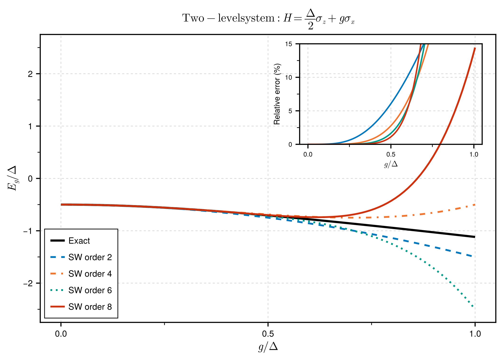

Schrieffer-Wolff Transformation
The Schrieffer-Wolff (SW) transformation is a perturbative method for block-diagonalizing Hamiltonians with well-separated energy scales. It was introduced by Schrieffer and Wolff in 1966 to derive the Kondo exchange interaction from the Anderson impurity model.
Theory
The Problem
Consider a Hamiltonian of the form:
\[H = H_0 + V\]
where:
- $H_0$ is the unperturbed Hamiltonian with known eigenstates grouped into low-energy ($P$) and high-energy ($Q$) sectors
- $V$ is a perturbation that couples the $P$ and $Q$ sectors
We want to find an effective Hamiltonian $H_{\text{eff}}$ that:
- Acts only within the low-energy sector $P$
- Captures the effects of $V$ to a given order in perturbation theory
The Transformation
We seek a unitary $U = e^S$ such that the transformed Hamiltonian:
\[H_{\text{eff}} = e^S H e^{-S}\]
is block-diagonal with respect to the $P$ and $Q$ subspaces. This means $H_{\text{eff}}$ has no matrix elements connecting $P$ and $Q$.
When $U = e^S$ for some anti-Hermitian generator $S$ (i.e., $S^\dagger = -S$), the transformed Hamiltonian can be expanded using the Baker-Campbell-Hausdorff (BCH) formula:
\[e^S H e^{-S} = H + [S, H] + \frac{1}{2!}[S, [S, H]] + \frac{1}{3!}[S, [S, [S, H]]] + \cdots\]
Determining the Generator
Decompose the Hamiltonian and generator into block-diagonal and off-block-diagonal parts:
\[H = H_d + V_{od}, \quad S = S_{od}\]
where:
- $H_d = P H P + Q H Q$ (block-diagonal)
- $V_{od} = P H Q + Q H P$ (off-block-diagonal)
- $S_{od}$ is purely off-block-diagonal (anti-Hermitian)
The generator equation at first order is:
\[[S, H_d] = -V_{od}\]
This is the fundamental equation that determines $S$. It states that the commutator of $S$ with the diagonal Hamiltonian must cancel the off-diagonal perturbation.
Solving the Generator Equation
For operators $O$ that are eigenoperators of the adjoint action of $H_d$—meaning $[H_d, O] = \varepsilon \cdot O$ for some energy $\varepsilon$—the solution is:
\[S = \sum_\alpha \frac{V_\alpha}{\varepsilon_\alpha}\]
where $V_\alpha$ are the components of $V_{od}$ and $\varepsilon_\alpha$ are the corresponding energy denominators.
Example: For a two-level system with $H_d = \frac{\Delta}{2}\sigma_z$ and $V_{od} = g\,\sigma^+$:
- $[\sigma_z, \sigma^+] = 2\sigma^+$, so $[H_d, \sigma^+] = \Delta\,\sigma^+$
- Therefore $S = \frac{g}{\Delta}\sigma^+$ (plus Hermitian conjugate for the $\sigma^-$ term)
The Effective Hamiltonian
Using the BCH expansion:
\[H_{\text{eff}} = H_d + \frac{1}{2}[S, V_{od}] + O(V^3)\]
The key second-order contribution is:
\[H^{(2)} = \frac{1}{2}[S, V_{od}]\]
This generates effective interactions within the low-energy sector that arise from virtual transitions to high-energy states.
Physical Interpretation
The SW transformation captures the physics of virtual processes:
- The system starts in the low-energy sector $P$
- The perturbation $V$ virtually excites it to high-energy sector $Q$
- The system returns to $P$ via another application of $V$
This virtual excitation costs energy $\Delta E$ and contributes to the effective Hamiltonian as $\sim V^2/\Delta E$.
Order-by-Order Expansion
At higher orders, the SW transformation proceeds iteratively:
| Order | Contribution | Energy dependence |
|---|---|---|
| 0 | $H_d$ | Original diagonal |
| 2 | $\frac{1}{2}[S_1, V]$ | $\sim g^2/\Delta$ |
| 3 | $\frac{1}{2}[S_1, [S_1, H_d]] + [S_2, V]$ | $\sim g^3/\Delta^2$ |
| 4 | Higher nested commutators | $\sim g^4/\Delta^3$ |
Each order adds terms suppressed by additional powers of $g/\Delta$.
Eigenoperator Method
This package implements two methods for solving the generator equation. The eigenoperator method works for operators that satisfy:
\[[H_d, O] = \varepsilon \cdot O\]
Such operators are called eigenoperators of the Liouvillian $\mathcal{L}_{H_d}(\cdot) = [H_d, \cdot]$.
Examples of Eigenoperators
| System | Operator | Eigenvalue |
|---|---|---|
| TLS: $H_d = \frac{\Delta}{2}\sigma_z$ | $\sigma^+$ | $+\Delta$ |
| $\sigma^-$ | $-\Delta$ | |
| Cavity: $H_d = \omega a^\dagger a$ | $a^\dagger$ | $+\omega$ |
| $a$ | $-\omega$ | |
| N-level: $H_d = \sum_i E_i \vert i\rangle\langle i\vert$ | $\vert i\rangle\langle j\vert$ | $E_i - E_j$ |
For these operators, the generator is simply:
\[S = \frac{O}{\varepsilon}\]
Composite Operators
Products of eigenoperators are also eigenoperators with additive eigenvalues:
\[[H_d, O_1 O_2] = (\varepsilon_1 + \varepsilon_2) O_1 O_2\]
Example: For the Jaynes-Cummings interaction $a^\dagger \sigma^-$:
- $[H_d, a^\dagger \sigma^-] = (\omega_c - \Delta) a^\dagger \sigma^-$
- Energy denominator: $\omega_c - \Delta$ (the detuning)
Matrix-Element Method for Lie Algebras
For SU(N) systems expressed in the Gell-Mann basis, the generators are not eigenoperators of the diagonal Hamiltonian. For example:
\[[\lambda_8, \lambda_2] \neq c \cdot \lambda_2\]
Instead, the commutator produces a linear combination of generators.
The solution is to work in the Cartan-Weyl basis, where the off-diagonal generators are replaced by transition operators:
| Gell-Mann | Cartan-Weyl |
|---|---|
| $\lambda_1, \lambda_4$ | $E_{12} = \vert 1\rangle\langle 2\vert$, $E_{21} = \vert 2\rangle\langle 1\vert$ |
| $\lambda_2, \lambda_5$ | $E_{13} = \vert 1\rangle\langle 3\vert$, $E_{31} = \vert 3\rangle\langle 1\vert$ |
| $\lambda_3, \lambda_6$ | $E_{23} = \vert 2\rangle\langle 3\vert$, $E_{32} = \vert 3\rangle\langle 2\vert$ |
The transition operators are eigenoperators:
\[[H_d, \vert i\rangle\langle j\vert] = (E_i - E_j)\vert i\rangle\langle j\vert\]
Algorithm:
- Compute energy eigenvalues $E_i$ from the diagonal Hamiltonian
- Convert $V_{od}$ from Gell-Mann to Cartan-Weyl basis
- Apply inverse Liouvillian: $S_{ij} = V_{ij} / (E_i - E_j)$
- Convert $S$ back to Gell-Mann basis
This is implemented in solve_for_generator_lie().
Energy Denominators
The energy denominators in SW transformations have important physical meaning:
Resonance Condition
When an energy denominator approaches zero ($\varepsilon \to 0$), the perturbation theory breaks down. This indicates a resonance where the two sectors are no longer well-separated.
Example: Dispersive Regime
In circuit QED, the Jaynes-Cummings Hamiltonian has energy denominator $\Delta = \omega_q - \omega_c$. The dispersive approximation is valid when:
\[|g| \ll |\Delta|\]
The effective Hamiltonian contains the dispersive shift:
\[\chi = -\frac{g^2}{\Delta}\]
This diverges as $\Delta \to 0$ (resonance), signaling the breakdown of the perturbative treatment.
How-To Guide
This section walks through using the Schrieffer-Wolff transformation step by step.
Step 1: Set Up the System
Let's work with a concrete example: a two-level system (qubit) coupled to a harmonic oscillator (the Jaynes-Cummings model).
using UnitaryTransformations
using QuantumAlgebra
using Symbolics
# Use σ± basis - important for SW to work correctly with spins
QuantumAlgebra.use_σpm(true)
# Define symbolic parameters
@variables Δ g # Δ = qubit-oscillator detuning, g = coupling strength
# Jaynes-Cummings Hamiltonian (in rotating frame)
H = Δ/2 * σz() + g * (a'()*σm() + a()*σp())The Hamiltonian describes:
- A qubit with splitting $\Delta$ (the $\sigma_z$ term)
- Coupling to an oscillator mode (the $a^\dagger \sigma^-$ and $a \sigma^+$ terms)
Step 2: Define the Subspace
We need to specify which states belong to the low-energy subspace $P$. For this example, we choose the qubit ground state:
# P = states where σz = -1 (qubit in ground state |g⟩)
P = Subspace(σz() => -1)The Subspace type specifies expectation values of operators in the subspace. Here, we say that in subspace $P$, the operator $\sigma_z$ has eigenvalue $-1$.
Multiple Constraints
For more complex systems, you can specify multiple constraints:
# Subspace with qubit ground state AND zero photons
P = Subspace(σz() => -1, a'()*a() => 0)Step 3: Understand the Decomposition
The SW transformation requires splitting $H$ into diagonal and off-diagonal parts with respect to $P$:
H_d, V_od = decompose(H, P)
println("Diagonal: ", H_d)
println("Off-diagonal: ", V_od)Output:
Diagonal: -0.5Δ + Δ σ⁺σ⁻
Off-diagonal: g a†σ⁻ + g a σ⁺- Diagonal ($H_d$): Operators that don't change the subspace (like $\sigma^+\sigma^-$, $a^\dagger a$)
- Off-diagonal ($V_{od}$): Operators that connect $P$ and $Q$ subspaces (like $\sigma^+$, $\sigma^-$)
Step 4: Perform the Transformation
Now apply the Schrieffer-Wolff transformation:
result = schrieffer_wolff(H, P; order=2)This returns a named tuple with:
result.S- The generator of the unitary transformation $e^S$result.H_eff- The block-diagonal effective Hamiltonianresult.H_P- The effective Hamiltonian projected onto subspace $P$
Higher Orders
You can go to higher orders for more accuracy:
result_4th = schrieffer_wolff(H, P; order=4)For orders 4 and above, enable parallel computation for better performance:
# Start Julia with threads: julia -t 4
result_4th = schrieffer_wolff(H, P; order=4, parallel=true)| Order | Approx. Time | Physics Captured |
|---|---|---|
| 2 | ~50 ms | Dispersive shifts |
| 4 | ~0.4 s | Kerr nonlinearity, Bloch-Siegert |
| 5 | ~1.5 s | Higher-order corrections |
| 6 | ~50 s | Research applications |
Simplification modes: Control the speed/simplification trade-off:
# Fastest: no simplification (expressions may be verbose)
result = schrieffer_wolff(H, P; order=4, simplify_mode=:none)
# Default: fast expansion (recommended)
result = schrieffer_wolff(H, P; order=4, simplify_mode=:fast)
# Thorough: full algebraic simplification (slower)
result = schrieffer_wolff(H, P; order=4, simplify_mode=:standard)Step 5: Analyze the Results
The Generator
println("Generator S = ", result.S)
# S = (g/Δ) a†σ⁻ + (-g/Δ) a σ⁺The generator $S$ is anti-Hermitian ($S^\dagger = -S$) and satisfies:
\[[S, H_d] = -V_{od}\]
The Effective Hamiltonian
# Collect and display all terms with simplified coefficients
terms = collect_terms(result.H_eff)
for (op, coeff) in terms
println(" ", coeff, " ", op)
endOutput:
-0.5Δ 𝟙
-(g²)/Δ a†a
Δ + (g²)/Δ σ⁺σ⁻
...The Projected Hamiltonian
For many applications, we only care about the subspace $P$:
println("H_P = ", result.H_P)
# H_P = -0.5Δ + (-(g²)/Δ) a†aThis is the dispersive Hamiltonian: the cavity frequency is shifted by $-g^2/\Delta$ when the qubit is in the ground state!
Step 6: Extract Physical Parameters
Use utility functions to extract specific coefficients:
# Get the dispersive shift (coefficient of a†a)
χ = extract_coefficient(result.H_P, a'()*a())
println("Dispersive shift χ = ", χ)
# Output: -(g²)/ΔStep 7: Numerical Evaluation
Substitute numerical values to get concrete numbers:
H_numeric = substitute_values(result.H_P, Dict(:g => 0.1, :Δ => 1.0))
println("H_P with g=0.1, Δ=1.0: ", H_numeric)Step 8: LaTeX Output
For publications and documentation, you can output results in LaTeX:
# Convert a single expression to LaTeX
println(to_latex(result.H_P))
# Output: - \frac{1}{2} \Delta + \frac{-g^{2}}{\Delta} {a}^{\dagger} {a}
# Pretty-print with a name
print_latex(result.H_P; name="H_P")
# Output: H_P = - \frac{1}{2} \Delta + \frac{-g^{2}}{\Delta} {a}^{\dagger} {a}
# Show all components of the result
show_result(result)Complete Example
Here's the full code:
using UnitaryTransformations
using QuantumAlgebra
using Symbolics
# Setup
QuantumAlgebra.use_σpm(true)
# Define symbolic parameters and Hamiltonian
@variables Δ g
H = Δ/2 * σz() + g * (a'()*σm() + a()*σp())
# Define subspace and transform
P = Subspace(σz() => -1)
result = schrieffer_wolff(H, P; order=2)
# Analyze results
println("Effective Hamiltonian in ground state subspace:")
for (op, coeff) in collect_terms(result.H_P)
println(" ", coeff, " ", op)
end
# Extract dispersive shift
χ = extract_coefficient(result.H_P, a'()*a())
println("\nDispersive shift: χ = ", χ)
println("Expected: -g²/Δ")Examples
Convergence Analysis
The following figure demonstrates how higher-order SW transformations systematically improve the accuracy of the effective Hamiltonian:

Key observations:
- Panel (a): Energy levels of a two-level system. Higher orders capture the curvature better.
- Panel (b): The energy gap $E_+ - E_-$ approaches the exact $\sqrt{\Delta^2 + 4\varepsilon^2}$ with higher orders.
- Panel (c): Relative error decreases with increasing SW order.
- Panel (d): Jaynes-Cummings model showing dispersive shift $\chi$ and Kerr nonlinearity $K$ (only present at order 4+).
Jaynes-Cummings: Dispersive Regime
The Jaynes-Cummings model describes a two-level atom coupled to a single cavity mode:
\[H = \omega_c a^\dagger a + \frac{\omega_q}{2}\sigma_z + g(a^\dagger\sigma^- + a\sigma^+)\]
In the dispersive regime ($|\Delta| = |\omega_q - \omega_c| \gg g$), the Schrieffer-Wolff transformation yields an effective Hamiltonian with a state-dependent frequency shift.
using UnitaryTransformations
using QuantumAlgebra
using Symbolics
QuantumAlgebra.use_σpm(true)
@variables Δ g # Δ = detuning, g = coupling
# Hamiltonian (in rotating frame)
H = Δ/2 * σz() + g * (a'()*σm() + a()*σp())
# Ground state subspace
P = Subspace(σz() => -1)
# Transform and display results
result = schrieffer_wolff(H, P; order=2)
show_result(result)Generator:
\[S = \frac{-g}{2\Delta} a^{\dagger} \sigma^{-} + \frac{g}{2\Delta} \sigma^{+} a\]
Effective Hamiltonian:
\[H_{\text{eff}} = -\frac{\Delta}{2} - \frac{g^{2}}{\Delta} a^{\dagger} a + \frac{g^{2} + \Delta^{2}}{\Delta} \sigma^{+} \sigma^{-} + \frac{2g^{2}}{\Delta} a^{\dagger} \sigma^{+} \sigma^{-} a\]
Projected to subspace P (qubit ground state):
\[H_P = -\frac{\Delta}{2} - \frac{g^{2}}{\Delta} a^{\dagger} a\]
Physical Interpretation
The effective Hamiltonian contains:
- Dispersive shift: $\chi = -g^2/\Delta$ — cavity frequency shifts when qubit is in ground state
- AC Stark shift: Qubit frequency shifts with photon number
This is the basis for qubit readout in circuit QED!

Extracting Parameters
χ = extract_coefficient(result.H_P, a'()*a())
println(to_latex(χ)) # Output: \frac{-g^{2}}{\Delta}
# Numerical evaluation
H_num = substitute_values(result.H_P, Dict(:g => 0.1, :Δ => 1.0))
# χ = -0.01, matching -g²/ΔTavis-Cummings: N Atoms in a Cavity
The Tavis-Cummings model generalizes Jaynes-Cummings to $N$ identical two-level atoms coupled to a single cavity mode:
\[H = \omega_c a^\dagger a + \sum_i \frac{\Delta_i}{2}\sigma_z^{(i)} + \sum_i g_i (a^\dagger\sigma^{(i)}_- + a\sigma^{(i)}_+)\]
This model describes multi-qubit circuit QED systems and collective atom-light interactions.
Using Symbolic Sums (Recommended for N Atoms)
For systems with an arbitrary number of atoms, use SymSum and SymExpr to represent the Hamiltonian symbolically:
using UnitaryTransformations
using QuantumAlgebra
using Symbolics
import QuantumAlgebra: sumindex, SymSum, SymExpr
QuantumAlgebra.use_σpm(true)
@variables ω_c Δ g # cavity freq, detuning, coupling
# Create a sum index representing Σᵢ over all atoms
i = sumindex(1)
# Build Tavis-Cummings Hamiltonian with symbolic sums
H = SymExpr(ω_c * a'()*a()) +
SymSum(Δ/2 * σz(i), i) +
SymSum(g * (a'()*σm(i) + a()*σp(i)), i)
# Zero-photon subspace (dispersive regime)
P = Subspace(a'()*a() => 0)
result = schrieffer_wolff(H, P; order=2)Key advantage: When computing commutators like $[\sum_i S_i, \sum_j V_j]$, the SymSum type correctly separates:
- Same-site terms ($i = j$): $\sum_i [S_i, V_i]$
- Cross-site terms ($i \neq j$): $\sum_i \sum_{j \neq i} [S_i, V_j]$
This produces the physically correct exchange interactions automatically!
Generator:
\[S = \sum_i \frac{g}{\Delta - \omega_c} a^{\dagger} \sigma^{(i)}_{-} + \frac{-g}{\Delta - \omega_c} \sigma^{(i)}_{+} a\]
Effective Hamiltonian:
\[H_{\text{eff}} = \omega_c a^\dagger a + \sum_i\frac{\Delta}{2} \sigma_z^{(i)} + \chi \, a^\dagger a \sum_i \sigma_z^{(i)} + \chi \sum_{i \neq j} \sigma^+_i \sigma^-_j + \text{const.}\]
where $\chi = g^2/(\Delta - \omega_c)$ is the dispersive shift per atom.
Physical Interpretation
The Tavis-Cummings effective Hamiltonian reveals collective effects:
- Collective Lamb shift: Cavity frequency shifts by $-N\chi$ ($N$ atoms contribute)
- AC Stark shift: Each atom's frequency shifts by $2\chi$ per photon
- Dispersive coupling: $\chi \cdot a^\dagger a \cdot J_z$ where $J_z = \sum_i \sigma_z^{(i)}/2$
- Exchange interaction: $\chi \sum_{i \neq j} \sigma^+_i \sigma^-_j$ — cavity-mediated spin-spin coupling
For $N$ atoms, the vacuum Rabi splitting scales as $g\sqrt{N}$, leading to enhanced dispersive effects. This is the foundation for:
- Multi-qubit dispersive readout in circuit QED
- Collective spin squeezing
- Quantum non-demolition measurements of collective spin
Numerical Example
For $N = 10$ atoms with $\Delta = 1.0$ GHz, $g = 0.1$ GHz:
- Single-atom dispersive shift: $\chi = g^2/\Delta = 10$ MHz
- Collective Lamb shift: $10 \times 10$ MHz = 100 MHz
- AC Stark shift per atom: 20 MHz per photon
Exchange Interaction: The Cross-Site Term
The exchange term $\chi \sum_{i \neq j} \sigma^+_i \sigma^-_j$ arises from virtual photon exchange between atoms. For two atoms, expanding the result:
# Expand to N=2 atoms to see explicit exchange terms
using QuantumAlgebra: expand_symsum
H_eff_N2 = expand_symsum(result.H_eff, 2) # Expand to 2 atoms
# Result includes: χ(σ⁺₁σ⁻₂ + σ⁺₂σ⁻₁)The exchange term represents cavity-mediated spin-spin coupling. For $N$ atoms, this generalizes to:
\[H_{\text{exchange}} = \chi \sum_{i \neq j} \sigma^+_i \sigma^-_j = \chi (J_+ J_- + J_- J_+)/2 - \chi N\]
where $J_\pm = \sum_i \sigma^\pm_i$ are collective spin ladder operators. This is the foundation for:
- Cavity-mediated quantum gates
- Dicke superradiance
- Spin squeezing via one-axis twisting
Alternative: Explicit Indices (for Small N)
For small, fixed numbers of atoms (e.g., N=2), you can use explicit site indices:
# Two explicit atoms (not using sum index)
H = ω_c * a'()*a() +
Δ/2 * σz(1) + Δ/2 * σz(2) +
g * (a'()*σm(1) + a()*σp(1)) +
g * (a'()*σm(2) + a()*σp(2))
P = Subspace(a'()*a() => 0)
result = schrieffer_wolff(H, P; order=2)
# Directly contains: χ(σ⁺₁σ⁻₂ + σ⁺₂σ⁻₁)This approach is simpler for small N but doesn't scale to arbitrary N like SymSum.
Projecting SymExpr to Subspace
The project_to_subspace function works with SymExpr, allowing you to project the effective Hamiltonian onto the low-energy subspace:
# Full effective Hamiltonian (block-diagonal)
result = schrieffer_wolff(H, P; order=2)
H_eff = result.H_eff # Contains terms for both P and Q sectors
# Project to subspace P (removes off-diagonal terms, substitutes spin projections)
H_P = project_to_subspace(H_eff, P)
# Or use result.H_P directly (already projected)
H_P = result.H_PWhat project_to_subspace does for SymExpr:
- Removes off-diagonal operators — terms like $\sigma^+$, $\sigma^-$ that connect P and Q
- Substitutes spin projections — $\sigma^+\sigma^-$ becomes 0 (spin-down) or 1 (spin-up)
- Preserves symbolic sums — $\sum_i \sigma_z^{(i)}$ remains as a symbolic sum
Example:
# Define subspace with both cavity and spin constraints
P = Subspace(a'()*a() => 0, σz() => -1)
# Project: σ⁺σ⁻ → 0 (for spin-down), off-diagonal terms removed
H_P = project_to_subspace(result.H_eff, P)Note: The projection substitutes spin operators but keeps bosonic operators like $a^\dagger a$ symbolically (they are diagonal but not numerically evaluated). This allows the result to remain valid for any photon number within the subspace constraints.
Two-Level System with Transverse Field
A qubit in longitudinal and transverse magnetic fields:
\[H = \frac{\Delta}{2}\sigma_z + \varepsilon\sigma_x\]
This textbook problem has an exact solution, making it perfect for verification.
using UnitaryTransformations
using QuantumAlgebra
using Symbolics
QuantumAlgebra.use_σpm(true)
@variables Δ ε
H = Δ/2 * σz() + ε * (σp() + σm())
P = Subspace(σz() => -1)
result = schrieffer_wolff(H, P; order=2)
print_latex(result.H_P; name="H_P")Output:
\[H_P = -\frac{\Delta}{2} - \frac{\varepsilon^{2}}{\Delta}\]
Comparison with Exact Solution
The exact ground state energy is:
\[E_- = -\sqrt{\frac{\Delta^2}{4} + \varepsilon^2} \approx -\frac{\Delta}{2} - \frac{\varepsilon^2}{\Delta} + O(\varepsilon^4)\]
The SW result matches the perturbation expansion exactly!

| $\varepsilon/\Delta$ | Exact | SW (2nd order) | Error |
|---|---|---|---|
| 0.01 | -0.50005 | -0.5001 | 0.00% |
| 0.05 | -0.50125 | -0.5025 | 0.00% |
| 0.10 | -0.50499 | -0.51 | 0.02% |
| 0.20 | -0.51980 | -0.54 | 0.28% |
Convergence with Order

The figure shows how the approximation error decreases with increasing SW order. For small perturbations ($\varepsilon/\Delta < 0.3$), convergence is rapid. For larger coupling, more orders are needed.
Rabi Model: Bloch-Siegert Shift
The full Rabi model includes counter-rotating terms neglected in the rotating-wave approximation:
\[H = \omega a^\dagger a + \frac{\Delta}{2}\sigma_z + g(\sigma^+ + \sigma^-)(a + a^\dagger)\]
using UnitaryTransformations
using QuantumAlgebra
using Symbolics
QuantumAlgebra.use_σpm(true)
@variables ω Δ g
H = ω * a'()*a() + Δ/2 * σz() + g * (σp() + σm()) * (a() + a'())
P = Subspace(σz() => -1)
result = schrieffer_wolff(H, P; order=2)
print_latex(result.H_P; name="H_P")Output:
\[H_P = -\frac{\Delta}{2} + \omega a^{\dagger} a - \frac{g^{2}}{\Delta - \omega} a^{\dagger} a - \frac{g^{2}}{\Delta + \omega} a^{\dagger} a + \frac{g^{2}}{\Delta + \omega} - \frac{g^{2}}{\Delta + \omega} (a^{\dagger})^2 - \frac{g^{2}}{\Delta + \omega} a^2\]
Physical Interpretation
Compared to Jaynes-Cummings, the full Rabi model produces:
- JC dispersive shift: $-g^2/(\Delta - \omega)$ from rotating terms
- Bloch-Siegert shift: $-g^2/(\Delta + \omega)$ from counter-rotating terms
- Squeezing terms: $a^2$ and $(a^\dagger)^2$ that squeeze the cavity field
The total dispersive shift combines both contributions:
\[\chi_{\text{total}} = -\frac{g^2}{\Delta - \omega} - \frac{g^2}{\Delta + \omega}\]

N-Level Atom in a Cavity
For atoms with more than two levels, use nlevel_ops:
using UnitaryTransformations
using QuantumAlgebra
using Symbolics
# 5-level atom: σ[i,j] = |i⟩⟨j|
σ5 = nlevel_ops(5, :q)
ω = [Symbolics.variable(Symbol("ω", i)) for i in 1:5]
@variables ωc g
# Atom + cavity + dipole coupling |1⟩↔|3⟩
H = sum(ω[i] * σ5[i,i] for i in 1:5) +
ωc * a'()*a() +
g * (σ5[1,3] * a'() + σ5[3,1] * a())
# Zero-photon subspace
P = Subspace(a'()*a() => 0)
result = schrieffer_wolff(H, P; order=2)
show_result(result)Generator:
\[S = \frac{g}{\omega_1 - \omega_3 - \omega_c} |1\rangle\langle 3| \, a^{\dagger} + \frac{g}{\omega_3 - \omega_1 + \omega_c} |3\rangle\langle 1| \, a\]
Physical Interpretation
- Dispersive shift: $\chi_{13} = g^2/(\omega_1 - \omega_3 + \omega_c)$
- AC Stark shifts on levels 1 and 3
- Other levels (2, 4, 5) appear only with bare energies
Three-Level Lambda System (SU(3))
For systems with SU(N) symmetry, use su_generators:
using UnitaryTransformations
using QuantumAlgebra
using Symbolics
# Gell-Mann matrices for SU(3)
λ = su_generators(3, :λ)
@variables Δ Ω₁ Ω₂
# Lambda system
H = Δ * λ[8] + Ω₁ * λ[1] + Ω₂ * λ[4]
P = Subspace(λ[8] => 1/sqrt(3))
# Automatically uses matrix-element method for SU(3)
result = schrieffer_wolff(H, P; order=2)
show_result(result)The package automatically detects SU(3) and uses the matrix-element method.
When to Use SU(N) vs N-Level
| Approach | Use When |
|---|---|
nlevel_ops | Physical atoms, specific transitions |
su_generators | Systems with SU(N) symmetry |
Key Points
- Always use
QuantumAlgebra.use_σpm(true)for SW transformations with spins - Define subspace carefully - this determines what "diagonal" means
- Use
collect_termsto see simplified coefficients - The physics is in the coefficients - extract them with
extract_coefficient - N-level and SU(N) systems are automatically handled with appropriate methods
- Use
parallel=truefor orders 4+ and start Julia with-t 4or more threads - Use
simplify_mode=:nonefor maximum speed when exploring
Comparison with Other Methods
vs. Löwdin Partitioning
Löwdin partitioning (also called quasi-degenerate perturbation theory) achieves the same goal but works directly with the Hamiltonian matrix rather than through a unitary transformation. SW provides the explicit generator $S$, which can be useful for understanding the transformation and computing other observables.
vs. Adiabatic Elimination
Adiabatic elimination assumes fast variables equilibrate instantly. SW is more systematic and provides higher-order corrections, but requires a perturbative expansion.
vs. Numerical Diagonalization
Numerical methods give exact eigenvalues but not analytical expressions. SW produces symbolic results like $g^2/\Delta$ that reveal the parameter dependence and scaling.
References
J. R. Schrieffer and P. A. Wolff, "Relation between the Anderson and Kondo Hamiltonians," Phys. Rev. 149, 491 (1966).
S. Bravyi, D. P. DiVincenzo, and D. Loss, "Schrieffer-Wolff transformation for quantum many-body systems," Ann. Phys. 326, 2793 (2011).
C. Cohen-Tannoudji, J. Dupont-Roc, and G. Grynberg, Atom-Photon Interactions (Wiley, 1998), Chapter 3.
M. Wagner, Unitary Transformations in Solid State Physics (North-Holland, 1986).